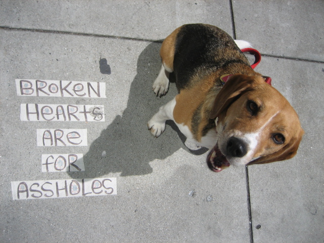

<--Previous Up Next-->

Broken Hearts are for Assholes
This is the work of a zany street artist usually found on Columbus below Broadway. We've also seen that artist's work not far from home on 24th Street. This one was in front of 580 Green Street, on the north side just east of Columbus.